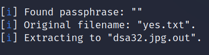
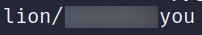

3.4 Steganography
Steganography is the practice of concealing a message within another message or a physical object. In computing/electronic contexts, a computer file, message, image, or video is concealed within another file, message, image, or video.
1. On your Kali Machine download and follow the instructions to install the “stegseek” application from the github https://github.com/RickdeJager/stegseek.
$ sudo apt install ./stegseek_0.6-1.deb
2. Extract hidden data from the “dsa32.jpg” file.
3. Run the following code.
$ stegseek dsa32.jpg
Output:

4. Show the contente of the “dsa32.jpg.out” file.
$ cat dsa32.jpg.out
Output:

Username: lion
Password: s*******you